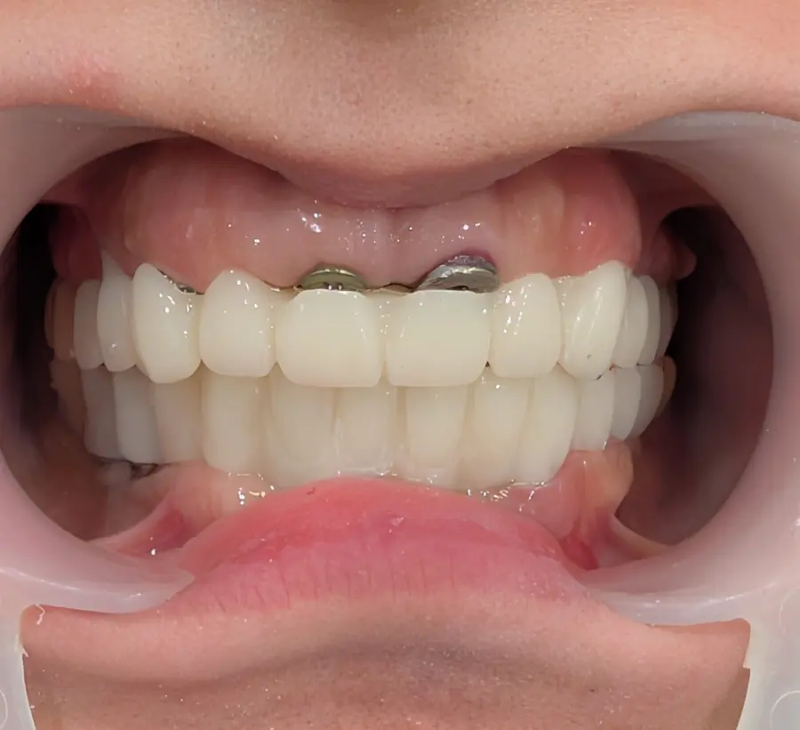

نسخه استخراجشده؛ ترجمه یا تأیید علمی انجام نشده است. وضعیت: captured
بیمار به بازسازی کامل هر دو فک نیاز دارد، با کمبود فضا، پلان اکلوزال ناهماهنگ و خواستهی زیبایی خیلی بالا. چند ایمپلنت قدامی هنوز آمادهی اسکن نیستند. چطور اکلوژن و زیبایی را در طول این مسیر طولانی حفظ میکنی؟

در درمانهای وسیع پروتزی، مخصوصاً وقتی هر دو فک درگیر بازسازیاند، یکی از بزرگترین چالشها حفظ اکلوژن، پلان فکی و زیبایی در طول مسیر درمان است. وقتی هر دو فک همزمان بازسازی میشوند، مرجع ثابتی برای اینها نمیماند و هر مرحله میتواند دستاورد مرحلهی قبل را برهم بزند.
یک فک موقتی میماند تا راهنما باشد، و فک مقابل یا بخشی از آن دائم میشود. به همین دلیل این درمان شبیه کراسمانت تطبیقی (Adaptive Cross-Mount) بود: نسخهای عملیتر و شخصیتر از مفهوم کلاسیک کراسمانت.
کراسمانت (Cross-Mounting) یعنی استفاده از موقتی یک فک برای ساخت دائمی فک مقابل، تا روابط فکی و اکلوژن از بین نروند. موقتی تستشدهی یک فک، همان مرجع ثابتی میشود که در بازسازی دوفکی کم است.
کراسمانت یعنی حفظ تعادل بین دقت و زیبایی: نتیجهی نهایی از دل موقتیهایی درمیآید که قبلاً تست و تنظیم شدهاند. در این کیس، PMMA موقتی نه فقط یک مرحلهی گذرا، بلکه ستون اصلی طراحی نهایی بود.